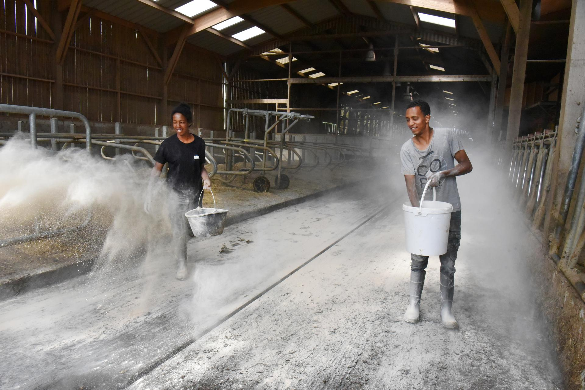

Présentation
Notre modèle associatif vous intrigue ? Venez l’explorer en détail avec nous.
Être à l’écoute des autres et prendre le temps d’échanger avec eux vous fait plaisir ? Votre sens du relationnel est donc déjà très bon. Et vous pouvez encore le développer. Pourquoi pas pour en faire votre futur métier ? En choisissant les métiers du commerce, de la vente et du magasinage, vous mettrez votre talent au service des autres pour mieux les conseiller et les servir tout en tissant de véritables liens. Une belle opportunité pour vous enrichir au gré des différentes rencontres, jour après jour.
Les possibles sont nombreux dans les métiers du commerce, de la vente et du magasinage. Vous pouvez faire le choix d’être en contact avec le public jour après jour, décider de sillonner les routes, œuvrer en coulisse dans les entrepôts ou partir à la conquête du web grâce au e-commerce… C’est à vous de choisir ce qui vous fait le plus envie pour vous épanouir et évoluer au gré des différentes opportunités.
Quel que soit le métier que vous souhaitez exercer, sachez que votre capacité d’écoute et de conseil sera un de vos principaux atouts. C’est en développant ce talent que vous deviendrez bientôt une personne clé, aussi bien pour votre entreprise que pour vos clients. En assurant la commercialisation de biens ou de services, vous contribuez à la croissance du chiffre d’affaires… Et ça, c’est indispensable pour la bonne santé d’une entreprise.
Que vous soyez votre propre patron en tant que commerçant indépendant, commercial au sein d’une entreprise, vendeur, dans une petite boutique, au sein de la grande distribution, de l’industrie… Vous êtes une personne capable de créer de la valeur.
Venir vous former en MFR, c’est pouvoir compter sur l’alternance pour apprendre votre futur métier sur le terrain. C’est un véritable atout dans ce secteur d’activité. Cela vous permet d’être au contact des autres, de votre clientèle mais aussi de votre équipe qui vous aidera à progresser rapidement.
Les métiers du commerce, de la vente et du magasinage offrent de belles perspectives de carrière et de nombreuses opportunités d’évolution. Pour accéder à de hautes responsabilités vous pouvez compter sur la formation ou la promotion interne.
Vous pouvez par exemple exercer en tant que :
En fonction du métier exercer vous serez peut-être amené à :
En faisant le choix de vous orienter vers les métiers du commerce, de la vente et du magasinage, vous allez forcément être en contact direct avec d’autres personnes. Votre clientèle ou votre équipe vous accompagnera au quotidien. C’est l’avantage : nous ne sommes jamais seuls dans ces métiers.
Cependant, vous pouvez choisir d’exercer votre métier de manière plus autonome en devenant votre propre patron par exemple ou en privilégiant la qualité de commercial.
Grâce au e-commerce, vous pouvez développer votre activité en ligne et imaginer de nouvelles perspectives pour conquérir de nouveaux marchés et étendre votre clientèle.
Si au contraire, le travail d’équipe est une source de motivation pour vous, de nombreuses perspectives s’offrent à vous. De la petite boulangerie de quartier à l’enseigne de grande distribution en passant par la concession automobile, la logistique, l’industrie ou le commerce de gros… Vous trouverez forcément une organisation qui vous permettra de tisser des liens uniques avec vos collègues.


J’aime beaucoup la relation avec les clients, découvrir la demande du client, ce qu’il veut vraiment et m’adapter à lui. C’est-à-dire lui trouver le meilleur produit.
BTS Management commercial opérationnel
Apprendre à bien vous connaître est indispensable pour orienter votre carrière dans la vente. Si vous aimez relever des défis, que vous savez gérer la pression et qu’avoir des objectifs ne vous fait pas peur, alors le métier de commercial est fait pour vous. Peut-être même que vous aurez alors l’occasion de bénéficier de commissions pour augmenter votre rémunération. Si vous aimez être au contact des autres et les conseiller, la vente est faite pour vous. Vous pouvez également tout mettre en œuvre pour vivre en accord avec vos passions : vous aimez la mode ? Faites le choix de travailler dans le prêt-à-porter. C’est plutôt le monde végétal qui vous passionne ? Alors filez faire profiter à tous de vos bons conseils en jardinerie…
Ces métiers sont faits pour vous si :
vous aimez le contact
avec les autres
vous êtes curieux et à l'écoute
vous faites preuve
d’autonomie
vous êtes dynamique
vous maîtrisez une ou plusieurs langues étrangères
vous appréciez
les défis
01/05
Voir des étoiles dans les yeux des autres, ça vous motive ? En travaillant dans le secteur de l'accueil, de l’animation et du tourisme, c’est vous qui allez les faire rêver !
02/05
L’organisation est votre meilleure amie ? Alors, nous avons besoin de vous dans les domaines de la comptabilité, de la bureautique, et de l’informatique.
03/05
Servir et régaler pourrait être votre devise ? Vous êtes 100% compatibles avec les métiers de l’hôtellerie et de la restauration.
04/05
Vous souhaitez cultiver le patrimoine et l’art de vivre à la française ? Les métiers de la vigne et de l’œnologie vous ouvrent grand les bras !
05/05
Vous êtes en quête d’une aventure riche de sens ? Les métiers des services aux personnes sont faits pour vous. Émotions garanties !
Être bien accompagné, ça commence dès maintenant !
Nos équipes sont à votre disposition pour répondre à vos questions.